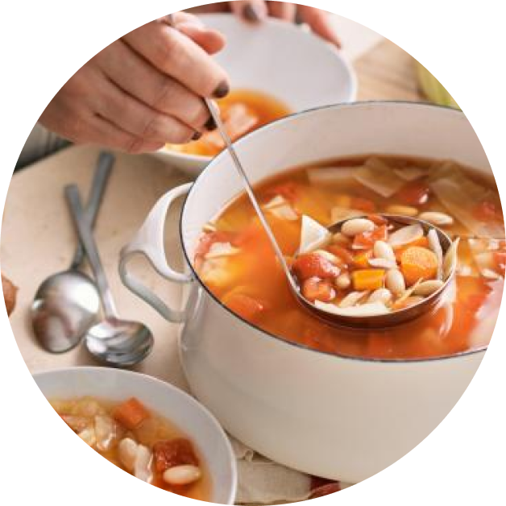
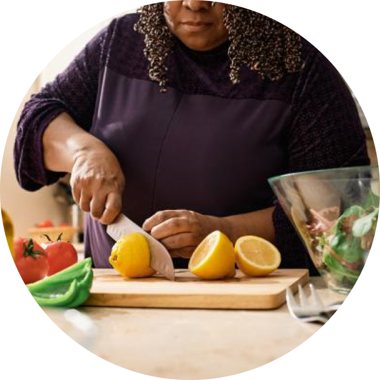

These tips can help you apply Canada's food guide.

Discover more tips for healthy eating.


The amount of time it takes to prepare and cook can often be seen as a challenge when it comes to healthy eating. Try following these simple tips to help save time preparing and cooking meals: